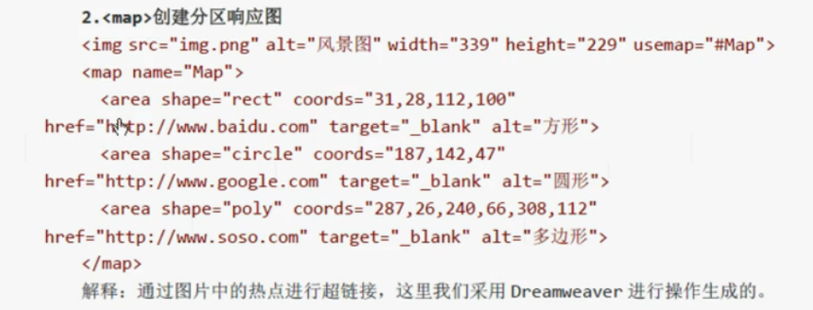
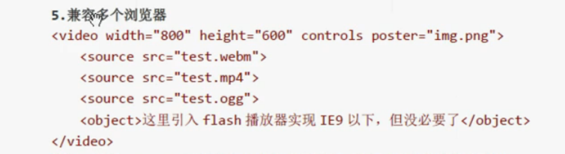
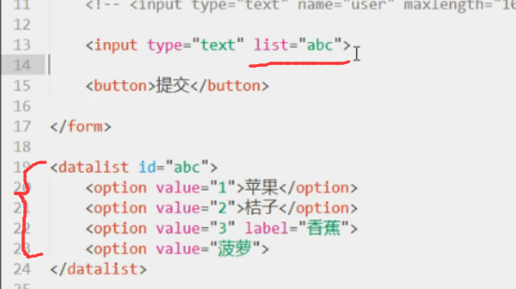
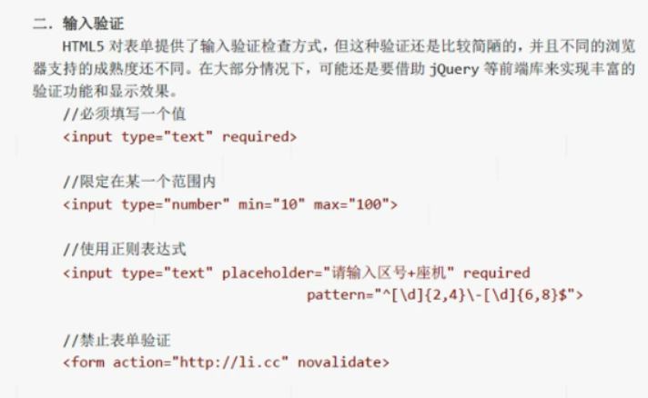
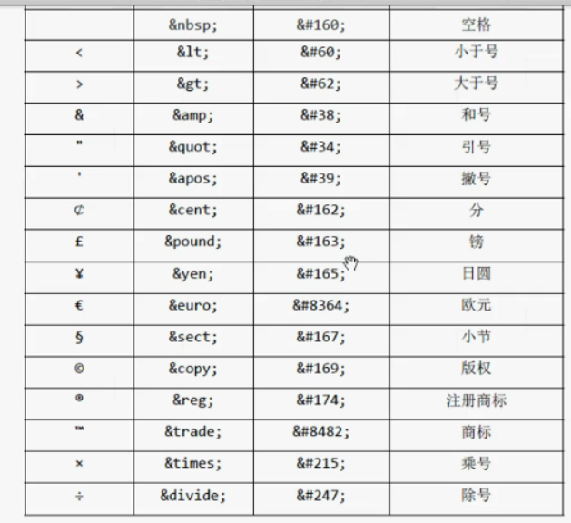

1. ! + tab
2. html lang="zh-cn"
3. meta charset="UTF-8"
4. Ctrl + ? => 注释
5. Ctrl + / => 取消注释
6. wbr => 安全换行
7. s\del => 删除线
8. u\ins => 下划线
9. code => 计算机代码片段
var => 编程语言中的变量
samp => 程序或计算机的输出
kbd => 用户的输入
-----必须在lang="en"下体现
10. abbr => 缩写
-----无效果
11. dfn => 表示定义术语
-----倾斜
12. q => 引用
-----加引号
13. cite => 引用其他作品标题
-----加粗
14. ruby => 语言元素 含 rp rt
-----可用于将汉语拼音放于汉字上方
15. bdo => 文字方向 dir="rtl" "ltr"
16. mark => 突出显示文本 黄底黑字
17. time => 时间 ------无效果
18. span => 表示一般文本
1. a:
href
hreflang
media
rel
target: _blank
_self
_parent
_top
type
2. 相对路径
当前路径 ./
当前路径子目录 xxx/...
当前路径孙子目录 xxx/xxx/...
当前目录父目录 ../
当前目录爷爷目录 ../../
3. 锚点设置
链接加锚点
链接： < a href="#1">第一章< /a> -->
锚点： < a name="1 ">< /a > 或 < a id="1">< /a> -->
1. blockquote 引自他出的大段内容
首尾缩进，有段落间隙
2. pre 展现格式化内容
大致按代码格式显示
3. ul \ ol \ dl \ dt \ dd------列表
4. figure-----使用插图 图片名用figcaption
< figure>
< figcaption>图片名< /figcaption>
< img src="1.jpg">
< /figure>
table
1. thead ---- 标题行
< thead>
< tr>
< th>表头1< /th>
< th>表头2< /th>
< /tr>
< thead>
2. tbody ----- 表格主体
< tbody>
tr td 除表头表尾后表的数据部分
< /tbody> -->
3. tfoot ----- 表脚
< tr>
< td>表尾< /td>
< /tr> -->
4. tr ----- 一行单元格
5. th ----- 标题行单元格
6. td ----- 单元格
7. col ----- 一列
8. colgroup ---- 一组列
用于设置一列的属性
法一：
< colgroup style="...;" span="1>
法二：
< colgroup>
< col> => 占位符
< col style="....;" span="1/2/3.....">
< /colgroup>
9. caption---------表格标题
10. 合并单元格----- colspan 合并成一行
rowspan 合并成一列
1. header 表示首部，主要设置页面的标头部分，包括，LOGO、标题、导航等
2. footer 表示尾部，包括，版权声明，友情链接等
3. hgroup 组合标题
< hgroup>
< h1>< /h1>
< h4>< /h4>
< /hgroup> -->
4. section 文档主题部分
5. nav 导航部分
6. article 一个独立成篇的文档
可以包含各个部分
7. aside 生成注释 ， 本身也是导航
8. address 小文档的联系方式
9. details 生成详情区域
summary 在其内部生成说明标签
------大多数未支持
1. img 嵌入图片
src
alt
width
height
ismap 创建服务器端分区响应图
< a href="index.html">
< img src="1.jpg" ismap>
< /a>
usemap 关联map元素,与下结合
2. map 定义客户端分区响应图

3. area 表示一个用户客户端分区响应图的区域
4. audio 表示一个音频资源
5. video 表示一个视频资源 第九节讲
6. iframe 嵌入一个文档
7. embed 用插件在HTML中嵌入内容
flash 插件
8. canvas 生成一个动态的图形画布
9. meter 嵌入数值在许可值范围背景中的图形表示
< meter value="12" min="34" max="56" low="" high="" optomum="">< /meter>
min和max表示边界范围，low表示小于它的值过低,high表示大于它的值过高,optimum最佳值
10. object 在HTML文档中嵌入内容 类似embed
11. param 表示将通过object元素传递给插件的参数
12. progress 嵌入目标进展或任务完成情况的图形表示 进度条
< progress value="" max="100">< /progress>
value初值 max最大值总值
13. source 表示媒体资源
14. svg 表示结构化矢量内容
15. track 表示媒体的附加轨道（例如字幕）
1. video 视频播放
**** webm mp4 ****
< video src="test.webm" controls autoplay loop muted poster="img.png" preload="none">< /video>
src 播放地址
width
height
autoplay 自动播放
preload 预先载入视频
none 什么都不加载，点击时加载
metadata 播放之前只能加载元数据（宽高，第一帧）
auto 直接加载
controls 显示播放控件
loop 循环
muted 静音
poster 指定视频载入时第一帧图片
*** 兼容多个浏览器 ***

2. audio 音频播放
**** .mp3 .m4a .ogg .wav ****
< audio src="test.mp3" controls autoplay>
src
autoplay
preload
controls 加控件
*** 兼容 ***
1. form 表示HTML表单
action 表示表单提交的页面
method 表示表单的请求方式
post 用表单提交
< form method="post">< /form>
get 用超链接提交
enctype 浏览器对发送给服务器的数据所采用的编码格式
application/x-www-form-urlencoded 默认编码，不能将文件上传到服务器
multipart/form-data 用于上传文件到服务器
text/plain 未规范编码，不建议使用
name 设置表单名称，以便程序调用
target _blank,_self,_parent,_top
autocomplete 设置浏览器记住用户输入的数据，实现自动完成表单，默认为on时自动完成，否为off
novalidate 设置是否执行客户端数据有效性检查
2.1 input 收集用户输入数据的控件
autofocus 让光标聚焦在某个input元素上，让用户直接输入
disabled 禁用input元素
autocomplete 单独设置input元素的自动完成功能
form 让表单外的元素和指定的表单挂钩提交，用id连接
type input元素的类型
text 单行文本
maxlength 最大长度
size 文本框宽度
value 默认值
readonly 只读可用
name
list 建议值，为文本框提供datalist的默认值

required 要求必须填写
placeholder 输入字符的提示
password 密码框
属性与text同
search 搜索框
与text同
sumbit,reset,button 按钮
formaction 覆盖form元素的action属性
formenctype 覆盖form元素的enctype属性
formmethod 覆盖form元素的method属性
formtarget 覆盖form元素的target属性
formnovalidate 覆盖form元素的novalidate属性
number,range 数值框
min
max
step 步长
readonly 只读
value 初始值
list 同text的list
required 要求必须输入一个值
checkbox/radio 复选框/单选框（name一致）
checked 初始时是否勾选
required 必须勾选
value 设置复选框、单选框勾选状态时提交的数据，值，但默认时为on
image,color 一个图片按钮，颜色按钮
< input type="image" src="">
提交时提交热点区
alt
width
height
formaction 覆盖form元素的action属性
formenctype 覆盖form元素的enctype属性
formmethod 覆盖form元素的method属性
formtarget 覆盖form元素的target属性
formnovalidate 覆盖form元素的novalidate属性
email,tel,url 生成一个检测电子邮件，号码，网址的文本框
限制输入的格式
时间类 获取日期和时间
date
month
time
week
datetime
dstetime-local
其属性与number同，但大多数浏览器不支持
最好用JQuery等前端库来实现
hidden 生成一个隐藏控件
显示是隐藏值，提交时显示值
file 生成一个上传控件
accept 指定接受的MIME类型（image/gif，image/jpeg,image/png....）
required 必须提供一个值
name input元素名称
value 默认起始值
2.2 textarea 输入多行文本的控件
name
form 若在表单外，则与表单挂钩
readonly
disabled 禁用
maxlength
autofocus 获取焦点
placeholder 设置输入时的提示信息
rows 设置行数
cols 设置列数
wrap 设置是否插入换行符，有soft和hard
required 设置必须输入值，否则无法通过验证
2.3 select 用来提供一组固定的选项,生成下拉列表框
option 提供一个选项
name 名称
value 值
disabled 禁用
form 若在表单外，则与表单挂钩
size 大小
multiple 多选
autofocus 获取焦点
required 选择验证，设置后必须选择才能通过
optgroup 表示一组相关的option元素，用label标签分类，内含option，selected
2.6 button 按钮
type submit 提交
form 指定按钮关联的表单
formaction 覆盖form元素的action属性
formenctype 覆盖form元素的enctype属性
formmethod 覆盖form元素的method属性
formtarget 覆盖form元素的target属性
formnovalidate 覆盖form元素的novalidate属性
reset 重置
button 普通按钮
2.7 datalist 定义一组提供给用户的建议值
2.8 fieldset 表示一组表单元素,用于分组
name
form
disabled
2.9 legend 表示fieldset元素的说明性标签,给分组加标题
2.10 label 表示表单元素的说明标签
< label>用户名：< input name="user">< /input>< /label>
或
< label for="uu">用户名：< /label>
< input name="user" id="uu">< /input>
2.11 output 表示计算结果
2.12 表单验证

1. 实体 用实体代码表示特殊意义的字符

2. 元数据 meta类
3. 全局属性
id名 一个页面唯一
class属性 归类，分类设置
accesskey 表单的快捷键，用于定位光标，windows+alt+指定键
< input type="text" accesskey="n 等指定键">
contenteditable="true" 用于表单，可修改文本
dir 表单，设置文本左到右（ltr）或右到左（rtl）
hidden 隐藏
lang 全部设置语言
title 提示文字
tabindex 用tab键移动光标时，可设置先后顺序
< input type="text" name="user" tabindex="2">
style css样式